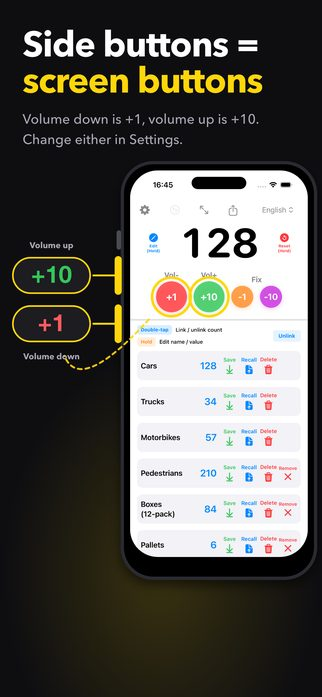
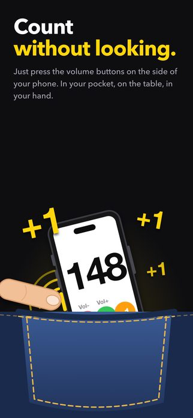
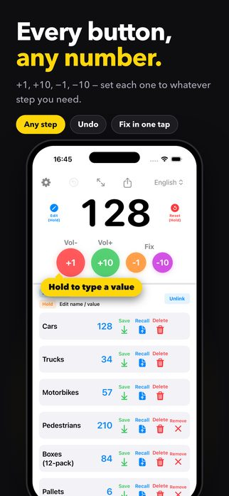
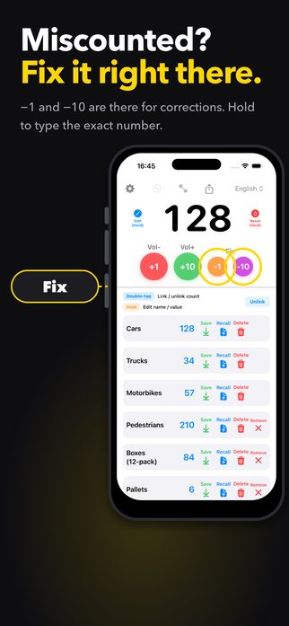
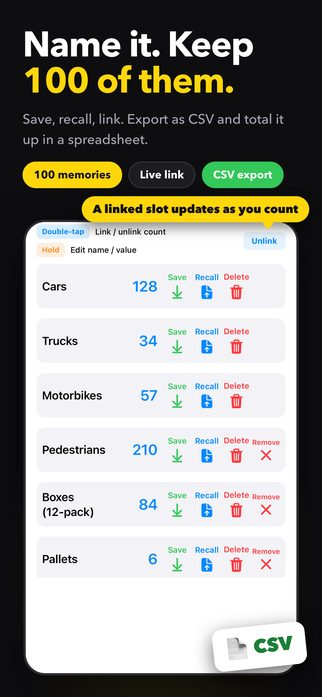
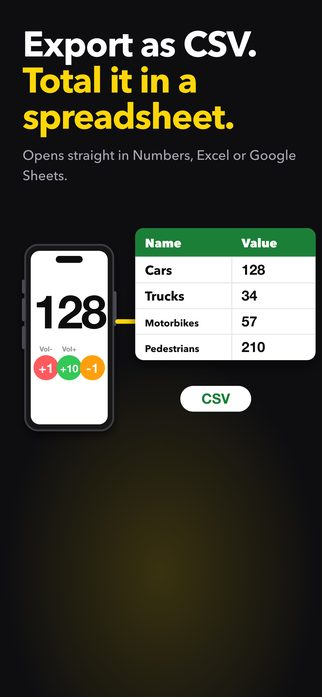
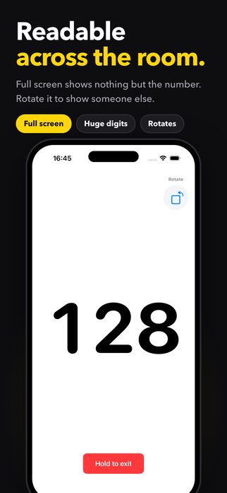
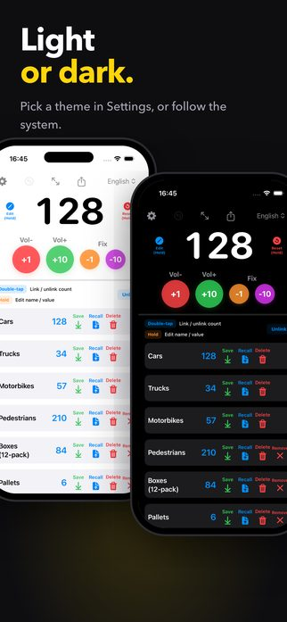
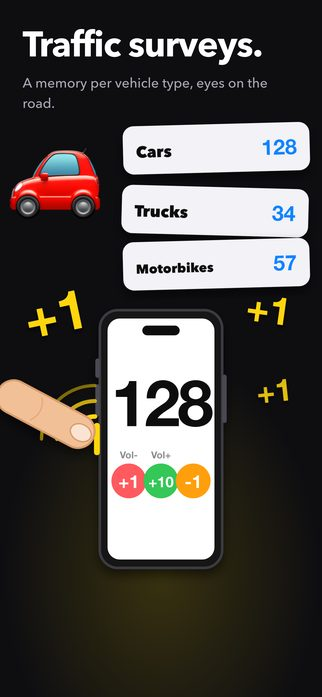
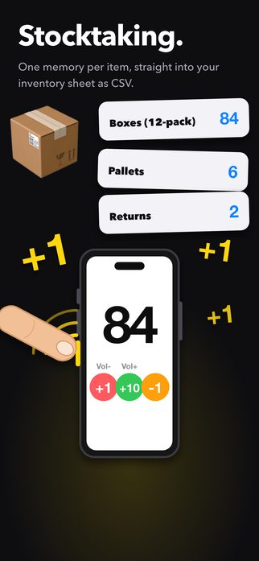

Counting, done properly — and nothing else.
Download on the App Store (free)
Counting stock, counting people through a door, counting laps. The hard part is usually that you have to look at the screen to press anything. Counter1234 counts with the volume buttons, so you can keep your eyes on what you are counting — or keep the phone in your pocket.










Undo takes back your changes one at a time, up to the last 50. To correct the number itself, press and hold the number and type it in again.
Check Settings. Under “Enable Physical Buttons”, volume up and volume down each have their own on/off switch, and how much each one counts by is set under “Step Settings”. If both are switched off, pressing them does nothing.
You can buy Remove Ads in Settings. If the ads come back, for example after you change phones, try “Restore Purchases” on the same screen. You can also watch one video ad to go ad-free for 24 hours (“Watch a video for 24h ad-free”, available when a video is ready).
Your counts, the names of your memory slots and your settings stay on your device. There is no account and no sign-in. To keep the app free, it shows Google AdMob ads, and the ad SDK collects some data to deliver, measure and diagnose them. The privacy policy lists exactly what, and how to opt out.
Questions, requests and bug reports are welcome at tatlink002@gmail.com.